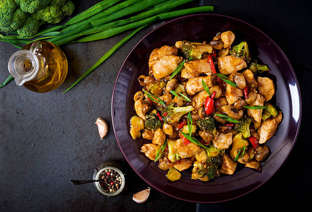

Stir Fry
Zpět

Popis jídla
Stir Fry je klasické asijské jídlo, které kombinuje jednoduchost a efektivitu přípravy. V malém množství oleje, v pánvi s názvem wok, smažíme dostupnou zeleninu. V mnoha případech kombinujeme s masem nebo nudlemi. V případě, že potřebujem spracovat různorodé ingredience v jednoduchém a rychlém jídle, tak je stir fry ideální volbou.
Ingredience
- olej
- maso
- zelenina všeho druhu:
- mrkev
- paprika
- rajče
- květák
- brokolice
- cibule
- arašídy
- jarní cibulka nebo pór
- sůl
- pepř
- chilli
Příprava
- Nakrájíme dostupnou zeleninu na stejně velké kostky.
- Nalejeme olej na pánev a necháme nahřát.
- Přidáváme ingredience podle tvrdosti.
- Pokud používáme maso tak přidáme jako první a zprudka osmahneme.
- Silně okořeníme.
- Smažíme za občasného míchání až do změknutí.
- Servírujeme čerstvé a dozdobené o čerstvé ingredience (jarní cibulka, aj.).